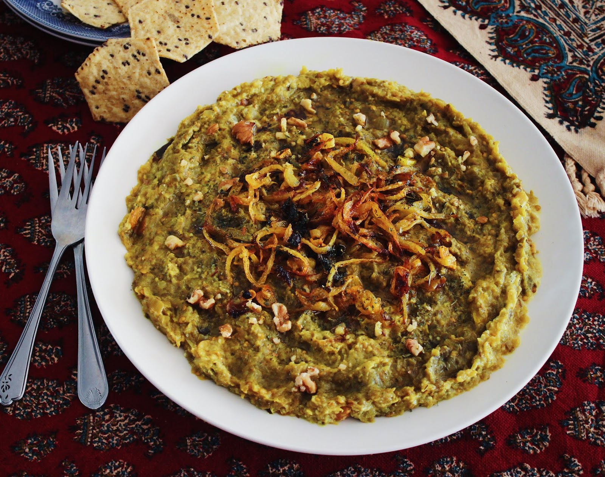

Kashk-e Bademjan (Persian Eggplant Dish)
A delicious Persian eggplant dip, to be enjoyed either as a starter or main dish!
Mind that you need Kashk for this dish, which is a special dairy product made by drying drained yoghurt or sour milk.

Ingredients:
- 6-7 eggplants
- 1 onion
- 3-4 cloves of garlic
- 2 spoons of dried mints
- 2 spoons of walnut powder
- 5 spoons Kaskh
- Turmeric, salt and pepper
Steps:
- Peel the eggplants and cut in half, sprinkling with salt. Fry them on a pan with some oil until cooked completely.
- Place the eggplants in a bowl and mash them with the back of a fork. The texture of the eggplants must remain (so do not use an electric masher or mash too strongly).
- Dice or grate the onion and grate the garlic. Fry the onion until golden, then add the garlic, turmeric and pepper. Stir fry them for a short while, then add the mashed eggplants.
- In the meantime, stir fry the dried mints for a short time in oil. Be careful not to leave them frying for too long, as the taste of mints can easily change to bitter if they are left to fry for too long.
- Add 2/3 glass of water to the Kashk. Then add it, the fried mints and the walnut powder to the eggplants. Taste and add salt to taste.
- As an extra, you can add some Piaz Dagh - fried onions on top. Enjoy!
This recipe was adopted from persiangood.com